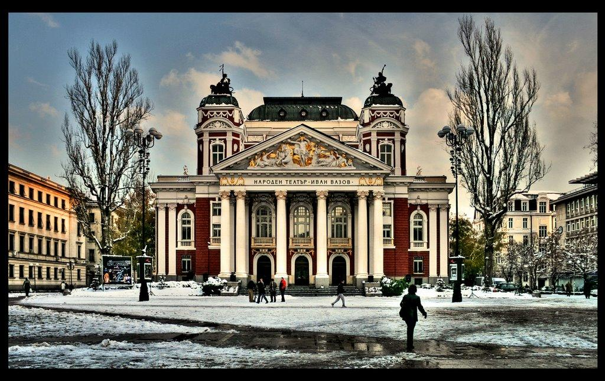
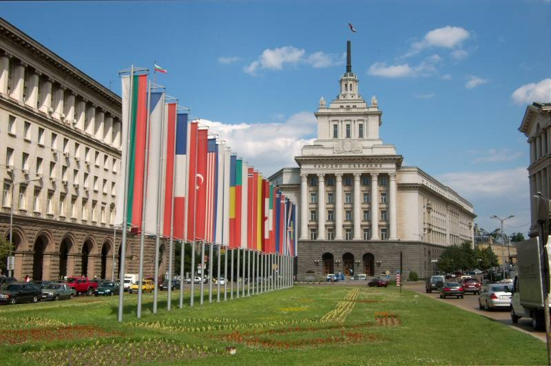
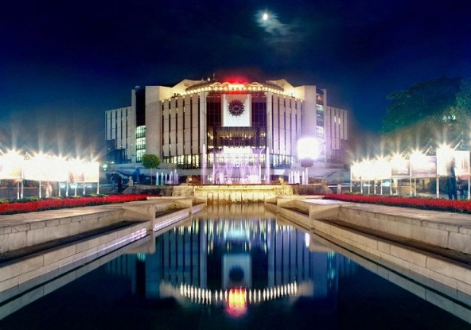

Народен театър "Иван Вазов"
Народен театър „Иван Вазов“ е Национален културен институт в
областта на театралното изкуство. След Освобождението на България от османско иго град София е определен
за столица. Постепенно тук се създават нови учебни и културни институции.За начало на летоброенето на
Народния театър се счита заповед на министъра“...

Президентство на република България
Президентът на България е държавният глава на Република България,
който е сред органите на държавната власт. Той се подпомага от вицепрезидент.
Като институция Президентът на България разполага с редица функции и правомощия,
които са регламентирани в Глава четвърта на Конституцията на Република България от 1991 година...

Национален дворец на културата
Националният дворец на културата, известен и с
краткото НДК (наименование до 1990 г. – Народен дворец на културата „Людмила Живкова“, на името
на Людмила Живкова, която дава идеята за създаването му), е национален културен център за конференции,
изложби и специални събития, най-големият конгресен център в Югоизточна Европа...